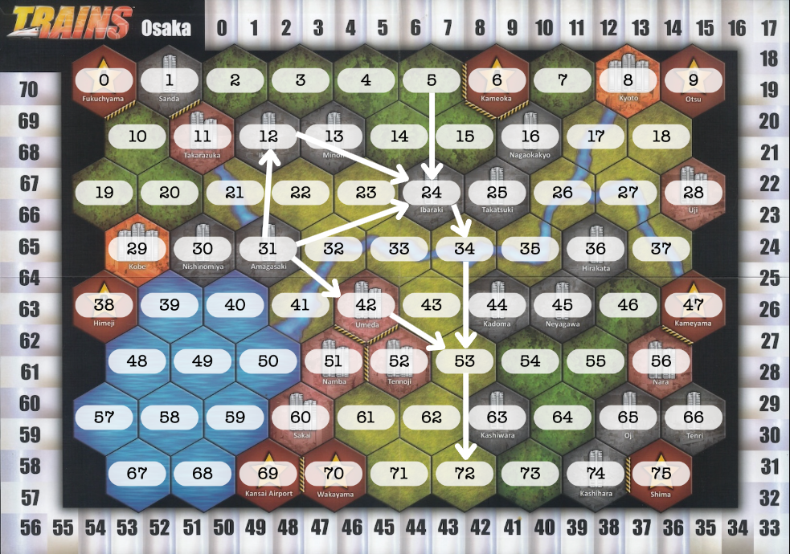
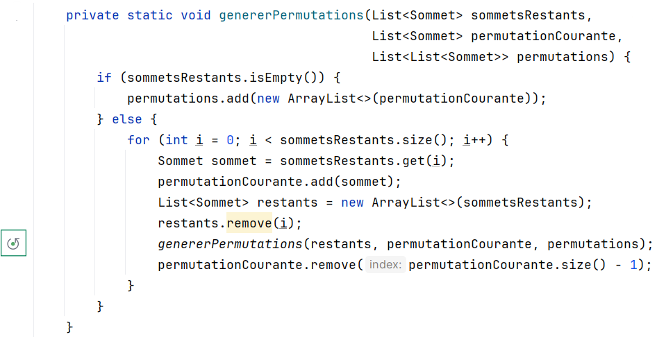
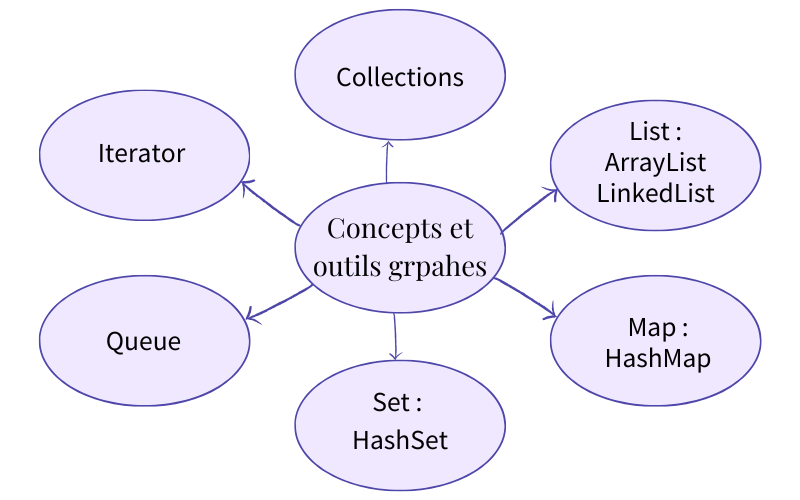

Nous avons dû mettre en œuvre différents algorithmes issus de la théorie des graphes pour simuler efficacement des trajets entre différentes gares et modéliser leurs connexions. Ces algorithmes nous ont permis d’analyser et d’optimiser les itinéraires tout en prenant en compte les contraintes propres au jeu "Trains".
Phase 3 : Application de la théorie des graphes


Nous avons également dû développer et integrer des parcours récursifs au sein de structures complexes. Cela nous a permis d'explorer les différentes combinaisons et solutions possibles. Cette approche a été essentielle pour résoudre les problèmes liés à la navigation et à la pose des railles par exemple.
Enfin, nous avons utilisé des structures de données telles que List, HashMap, et Queue pour gérer et manipuler efficacement les informations nécessaires au fonctionnement du jeu. Ces choix nous ont permis d’assurer une organisation optimale des données et de garantir des performances satisfaisantes même pour des scénarios complexes.

A propos du projet
Versionning : GitLab
Equipe : 2 personnes
Outils de développement : Java
Durée du projet : du 16 mai au 7 juin 2024, 22 jours
Communication : GoogleDocs, CodeWithMe de IntelliJ